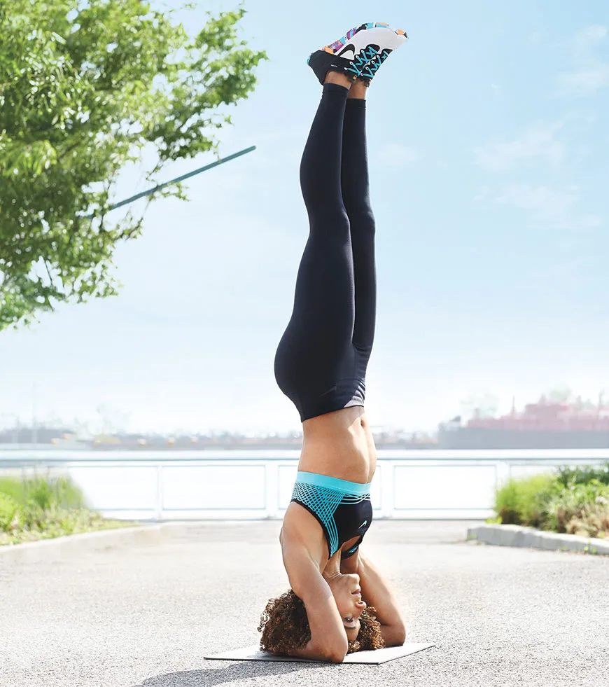

Headstand (Sirsasana)
The Headstand, or Sirsasana, is often referred to as the "King of Asanas." It is a challenging inversion pose that offers numerous physical and mental benefits.
- Improves balance and strengthens the core.
- Increases blood flow to the brain, enhancing focus and mental clarity.
- Boosts upper body strength, particularly in the shoulders and arms.
- Stimulates the endocrine system and improves circulation.
- Relieves stress and promotes a sense of calmness.
- Step 1: Begin by kneeling on the floor and interlocking your fingers to create a firm base for your head.
- Step 2: Place the top of your head on the ground, cradled by your hands, and lift your knees off the floor.
- Step 3: Slowly walk your feet closer to your head, shifting your weight onto your arms.
- Step 4: Lift one leg at a time off the ground, bringing both legs upward into a straight position.
- Step 5: Hold the pose for 10–30 seconds or as long as comfortable, breathing steadily.
- Step 6: To come down, lower your legs gently one at a time and rest in Child's Pose for a few breaths.
Note: Avoid this pose if you have neck injuries, high blood pressure, or heart conditions. Practice against a wall if you're a beginner and focus on alignment and balance.